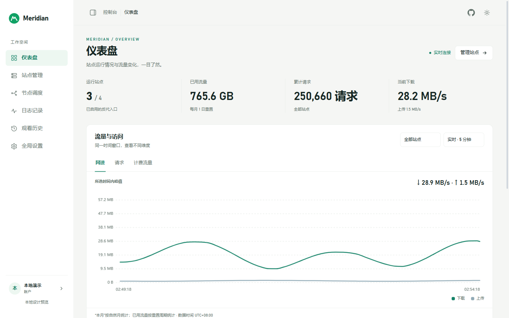

多站点与线路
独立端口、路径前缀、域名前缀三种入口，主线路加最多七条备用线路，自动故障切换。
v1.11.4 已发布
站点入口、备用线路、播放改写、流量统计、请求日志、观看历史、TLS 证书和边缘 Agent，一个面板全部接管。

不需要拼装脚本和反向代理规则，Meridian 把日常运营收进一个面板。
独立端口、路径前缀、域名前缀三种入口，主线路加最多七条备用线路，自动故障切换。
PlaybackInfo、HLS、DASH、重定向、字幕、图片和 WebSocket 地址全部改写，主视频流可反代或直连 CDN。
不内置伪装 UA，客户端 UA 默认原样透传；需要时可按站点指定自定义 UA。
实时网速、请求与计费流量统一采样，支持缺报区间回填，速度保留真实峰值。
同步当前播放会话与已保存记录，媒体库数量、保号提醒和 TMDB 补全可选开启。
定时推送请求与流量数据，流量额度预警按档位提醒，可先发测试日报验证。
ACME DNS-01 自动签发与续签，支持加密备份恢复，旧格式备份仍可读取。
一台 Controller 管理多台 Linux Agent，DNS 只切换新连接，V4 发布 A、V6 发布 AAAA。
启用调度后，Controller 下发路由、线路、改写与 TLS 配置，Agent 通过健康检查后才切换 DNS。
Controller 实时下发与校验；DNS 只影响新连接，已有播放不会被强制迁移。
以下截图使用演示数据，不含任何生产环境域名、IP、令牌或证书。
Docker 一条 compose 启动；首次启动会输出管理员初始化令牌。
services:
meridian:
image: ghcr.io/chanhui800/meridian:latest
container_name: meridian
restart: unless-stopped
network_mode: host
volumes:
- ./data:/app/data
environment:
PORT: "9090"
DB_PATH: /app/data/meridian.db